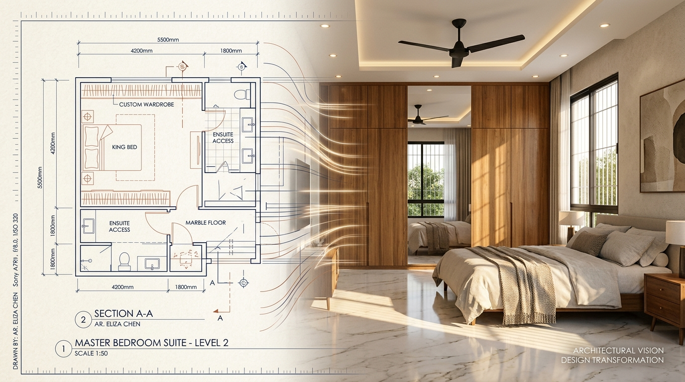

Manual 3D BIM modelling from 2D architectural drawings is time-consuming, expensive, and error-prone, requiring 10–14 hours of specialised CAD labour per residential floor. Furthermore, conventional 3D software fails to convey real human domestic spatial scale, leaving clients and architects disoriented inside virtual models.
The Solution: Axis Architecture provides an autonomous, end-to-end computer vision pipeline that transforms raster blueprints into parametric 3D models in 1.8 seconds, with biometrically calibrated human walking perception (12m room = 25 steps).
-
•
Autonomous CV Parsing: Segment walls, doors, and windows from blueprint images with > 94% precision.
-
•
Parametric BIM Graph: Reconstruct topological polygons, wall subsegments, and room centroids in real time.
-
•
True Spatial Cadence: Calibrate walk speed (1.18 m/s) and stride (0.48 m) so virtual rooms match real-world step counts.
-
•
Interactive Design & Sun Study: Real-time solar day/night azimuth tracking and interactive PBR material swatches.
1. 2D Blueprint Image (PNG/JPG)
Raster
↓ OpenCV CV Service (Port 8000)
2. Morphological Kernel & Hough Transform
Segmentation
↓ Vector Graph & Coordinate Transform
3. BuildingModel JSON Data Structure
BIM Graph
↓ React Three Fiber / Three.js Engine
4. 60 FPS Immersive 3D Walkthrough
WebGL

2D CAD Vector Blueprint ➔ 3D Photorealistic Interior
12m = 25 Steps
Biometric Human Stride & Wide-Angle Vision
Standard 3D viewers use unrealistic sprint speeds (3.6 m/s) and narrow FOVs (70°), making rooms look like congested boxes traversed in 5 keystrokes. Axis Architecture introduces:
WALKING PACE
1.18 m/s
Natural domestic cadence
STRIDE LENGTH
0.48 m
12m room = 25 steps
CAMERA LENS
92° Wide
Human binocular eye
HEAD BOBBING
±0.022 m
Sinusoidal footfall sway
Dynamic Solar Azimuth & Elevation Tracking
Computes solar position between 06:00 AM and 10:00 PM, adjusting directional sunlight angle, sky color, warm soffit spotlights, and window grill shadow projections in real time. Enables passive solar heating analysis.
Sunrise (06:30)
•
Noon (12:00)
•
Golden Hour (17:30)
Tactile Interior Customization
Instant 1-click material swaps (Italian Calacatta marble, Nordic Oak wood, Quartz Terrazzo, Clay tiles). Features interactive animated door swings (0° ↔ 92°) with CAD floor swing arcs on click.
| Metric |
Revit / SketchUp |
Axis Architecture |
| 2D→3D Time |
4 – 8 Hours |
1.8 Seconds |
| Human Cadence |
Flying / None |
25 steps / 12m |
| Solar Simulation |
Pre-baked / Slow |
Live 24h Slider |
| Hardware Req. |
Heavy Workstation |
Any Web Browser |
Next.js 14 (App Router)
Three.js / React Three Fiber
Python FastAPI Microservice
OpenCV (CV Blueprint Parser)
TailwindCSS / Framer Motion
BIM Topology Vector Graph
Conclusion: Axis Architecture bridges 2D architectural drafting and spatial immersion. By combining autonomous CV feature extraction with biometrically calibrated human walking, it offers architects and clients instant, intuitive, and accurate architectural understanding.